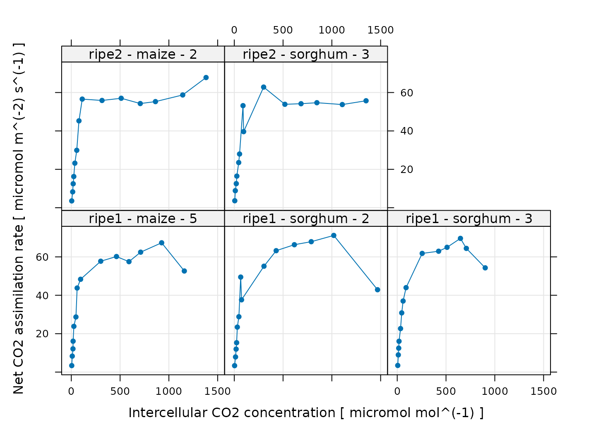
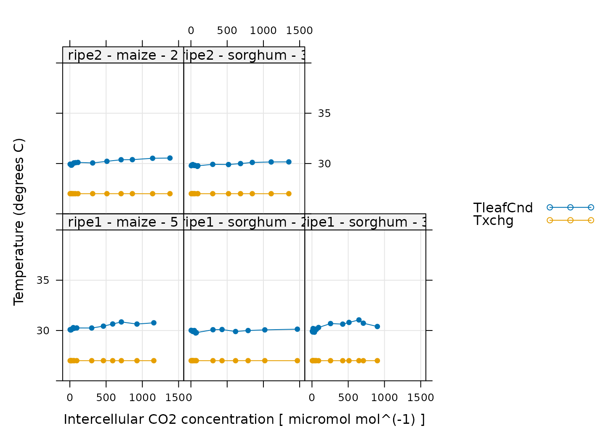

Overview
In this vignette, we will give an example showing how to analyze
C4 A-Ci data using the PhotoGEA package. The
commands in this vignette can be used to initialize your own script, as
described in Customizing Your
Script.
Background
Understanding C4 A-Ci Curves
An A-Ci curve (or CO2 response curve) is a particular type of gas exchange measurement where a living leaf is exposed to varying concentrations of CO2. For each CO2 concentration in the sequence, the net assimilation rate \(A_n\), stomatal conductance to H2O (\(g_{sw}\)), and other important quantities are measured and recorded. Typically, other environmental variables such as temperature, humidity, and incident photosynthetically-active photon flux density are held constant during the measurement sequence so that changes in photosynthesis can be attributed to CO2 alone.
Because of their different cell structures and biochemical pathways, C3 and C4 plants have very different responses to CO2. Here, we will only be discussing C4 plants.
The full C4 photosynthetic pathway is quite complicated, consisting of at least two hundred individual reactions, each of which may have an impact on a measured A-Ci curve. However, simplified models for photosynthesis are available and are much easier to understand and work with. These models tend to be based around PEP carboxylase and rubisco kinetics, describing how the net assimilation rate responds to the partial pressure of CO2 in the mesophyll or bundle sheath cells. The most widely-used model is described in in Biochemical Models of Leaf Photosynthesis (S. von Caemmerer 2000).
This model provides a framework for understanding the changes in \(A_n\) that occur as a C4 plant is exposed to successively higher concentrations of CO2. Overall, the photosynthetic response to CO2 under high light conditions can be divided into two separate ranges:
- For low levels of CO2, CO2 assimilation is primarily limited by PEP carboxylation in the mesophyll cells.
- For high levels of CO2, CO2 assimilation is primarily limited by rubisco activity in the bundle sheath cells (or possibly by the rate of PEP carboxylase regeneration).
More specifically, the model provides equations that calculate the net assimilation rate \(A_n\) from the maximumum rate of PEP carboxylation (\(V_{p,max}\)), the maximum rate of PEP carboxylase regeneration (\(V_{p,r}\)), the maximum rate of rubisco activity (\(V_{c,max}\)), the total rate of mitochondrial respiration in the mesophyll and bundle sheath cells (\(R_d\)), the partial pressure of CO2 in the mesophyll (\(P_{cm}\)), and several other parameters. The full equations are quite complicated, but can be approximated by a simpler version where \(A_n\) is given by the minimum of three separate enzyme-limited assimilation rates:
- The PEP-carboxylation-limited rate (\(A_{pc}\)).
- The rubisco-limited rate (\(A_r\)).
- The PEP-regeneration-limited rate (\(A_{pr}\)).
Using the equations that compose this model, it is possible to calculate plots like the one below, which illustrates the three different limiting rates and the overall net assimilation rate calculated using the full equations. The two distinct ranges can be identified as the initial part of the curve (where there is a roughly linear increase in \(A_n\) with \(P_{cm}\)) and the later part (where \(A_n\) is nearly flat with very little dependence on \(P_{cm}\)).

(Note: this figure was generated using the
calculate_c4_assimilation function from the
PhotoGEA package, and it represents the photosynethetic
response of a C4 leaf according to the model with
Rd = 1 micromol m^(-2) s^(-1), Vpmax = 150
micromol m^(-2) s^(-1), Vcmax = 30 micromol m^(-2) s^(-1),
Vpr = 80 micromol m^(-2) s^(-1), and a leaf temperature of
30 degrees C. Arrhenius temperature response parameters were taken from
S. von Caemmerer (2021).)
Thus, one of the most common reasons to measure an A-Ci curve is to
interpret it in the context of this model. In other words, by fitting
the model’s equations to a measured curve, it is possible to estimate
values for Rd, Vpmax, Vcmax, and
Vpr. See the documentation for
calculate_c4_assimilation for more information about these
important quantities.
As is evident from the figure above, rubisco activity and PEP
regeneration limitations actually both produce a very similar end
result, where \(A_n\) becomes
essentially flat as \(P_{cm}\)
increases. For this reason, it is practically impossible to distinguish
between the two types of limiting rates when analyzing a C4
A-Ci curve; if both limitations are considered simultaneously, it is not
usually possible for an optimization algorithm to determine a unique
solution. Because of this, it is common to set either Vpr
or Vcmax to a high value when fitting (so it never becomes
a limiting factor), and only allow the other to vary. In the rest of
this document, we will be setting Vpr = 800 and only
allowing Vcmax to vary when performing fits; this is the
default behavior of the fit_c4_aci function from the
PhotoGEA package, which will be discussed later.
Practicalities
There are a few important practicalities to keep in mind when thinking about CO2 response curves.
One point is that C4 photosynthesis models generally predict the
response of assimilation to the partial pressure of CO2 in
the mesophyll (\(P_{cm}\)), but gas
exchange measurements can only determine the CO2
concentration in the leaf’s intercellular spaces (\(C_i\)). Thus, an extra step is required
when interpreting A-Ci curves. If the mesophyll conductance to
CO2 (\(g_{mc}\)) and the
total pressure (\(P\)) are known, then
it is possible to calculate values of \(P_{cm}\) from \(A_n\), \(C_i\), \(P\), and \(g_{mc}\). Otherwise, it is also possible to
assume an infinite mesophyll conductance; in this case, \(C_m = C_i\), and the estimated values of
Vcmax and other parameters can be considered to be
“effective values” describing the plant’s response to intercellular
CO2.
Another important point is that plants generally do not appreciate being starved of CO2, so it is not usually possible to start a response curve at low CO2 and proceed upwards. A more typical approach is to:
- Begin at ambient atmospheric CO2 levels.
- Decrease towards a low value.
- Return to ambient levels and wait for the plant to reacclimate; this waiting period is usually accomplished by logging several points at ambient CO2 levels.
- Increase to higher values.
When taking this approach, it therefore becomes necessary to remove the extra points measured at ambient CO2 levels and to reorder the points according to their CO2 values before plotting or analyzing them.
The Data
A-Ci curves are commonly measured using a Licor portable
photosynthesis system such as the Li-6400 or Li-6800. These machines
record values of \(A_n\), \(g_{sw}\), and many other important
quantities. They produce two types of output files: plain-text and
Microsoft Excel. It is often more convenient to work with the Excel
files since the entries can be easily modified (for example, to remove
an extraneous row or add a new column). On the other hand, it can be
more difficult to access the file contents using other pieces of
software such as R. However, the PhotoGEA package reduces
this barrier by including tools for reading Licor Excel files in R,
which will be demonstrated in the following section.
Loading Packages
As always, the first step is to load the packages we will be using.
In addition to PhotoGEA, we will also use the
lattice package for generating plots.
If the lattice package is not installed on your R setup,
you can install it by typing
install.packages('lattice').
Loading Licor Data
The PhotoGEA package includes two files representing
A-Ci curves measured using two Li-6800 instruments. The data is stored
in Microsoft Excel files, and includes curves measured from two
different crop species (tobacco and soybean) and several different plots
of each. Each curve is a sixteen-point CO2 response curve; in
other words, the CO2 concentration in the air surrounding the
leaf was varied, and \(A_n\) (among
other variables) was measured at each CO2 setpoint. Although
these two files are based on real data, noise was added to it since it
is unpublished, so these files should only be used as examples.
The files will be stored on your computer somewhere in your R package
installation directory, and full paths to these files can be obtained
with system.file:
# Define a vector of paths to the files we wish to load
file_paths <- c(
system.file('extdata', 'c4_aci_1.xlsx', package = 'PhotoGEA'),
system.file('extdata', 'c4_aci_2.xlsx', package = 'PhotoGEA')
)To actually read the data in the files and store them in R objects,
we will use the read_gasex_file function from
PhotoGEA. Since there are multiple files to read, we will
call this function once for each file using lapply:
# Load each file, storing the result in a list
licor_exdf_list <- lapply(file_paths, function(fpath) {
read_gasex_file(fpath, 'time')
})The result from this command is an R list of “extended data frames”
(abbreviated as exdf objects). The exdf class
is a special data structure defined by the PhotoGEA
package. In many ways, an exdf object is equivalent to a
data frame, with the major difference being that an exdf
object includes the units of each column. For more information, type
?exdf in the R terminal to access the built-in help menu
entry, or check out the Working With Extended Data
Frames vignette.
Generally, it is more convenient to work with a single
exdf object rather than a list of them, so our next step
will be to combine the objects in the list. This action can be
accomplished using the rbind function, which combines
table-like objects by their rows; in other words, it stacks two or more
tables vertically. This action only makes sense if the tables have the
same columns, so before we combine the exdf objects, we
should make sure this is the case.
The PhotoGEA package includes a function called
identify_common_columns that can be used to get the names
of all columns that are present in all of the Licor files. Then, we can
extract just those columns, and then combine the exdf
objects into a single one.
# Get the names of all columns that are present in all of the Licor files
columns_to_keep <- do.call(identify_common_columns, licor_exdf_list)
# Extract just these columns
licor_exdf_list <- lapply(licor_exdf_list, function(x) {
x[ , columns_to_keep, TRUE]
})
# Use `rbind` to combine all the data
licor_data <- do.call(rbind, licor_exdf_list)Now we have a single R object called licor_data that
includes all the data from several Licor Excel files. For more
information about consolidating information from multiple files, see the
Common Patterns section of the Working
With Extended Data Frames vignette.
Validating the Data
Before attempting to fit the curves, it is a good idea to do some basic checks of the data to ensure it is organized properly and that it was measured properly.
Basic Checks
First, we should make sure there is a column in the data whose value
uniquely identifies each curve. In this particular data set, several
“user constants” were defined while making the measurements that help to
identify each curve: instrument, species, and
plot. However, neither of these columns alone are
sufficient to uniquely identify each curve. We can solve this issue by
creating a new column that combines the values from each of these:
# Create a new identifier column formatted like `instrument - species - plot`
licor_data[ , 'curve_identifier'] <-
paste(licor_data[ , 'instrument'], '-', licor_data[ , 'species'], '-', licor_data[ , 'plot'])The next step is to make sure that this column correctly identifies
each response curve. To do this, we can use the
check_licor_data function from PhotoGEA. Here
we will supply the name of a column that should uniquely identify each
response curve (curve_identifier), the expected number of
points in each curve (16), the name of a “driving” column
that should follow the same sequence in each curve
(CO2_r_sp). If the data passes the checks, this function
will have no output and will not produce any messages. (For more
information, see the built-in help menu entry by typing
?check_licor_data.)
# Make sure the data meets basic requirements
check_licor_data(licor_data, 'curve_identifier', 16, 'CO2_r_sp')However, if check_licor_data detects an issue, it will
print a helpful message to the R terminal. For example, if we had
specified the wrong number of points or the wrong identifier column, we
would get error messages:
check_licor_data(licor_data, 'curve_identifier', 15)
#> curve_identifier npts
#> 1 ripe1 - maize - 5 16
#> 2 ripe1 - sorghum - 2 16
#> 3 ripe1 - sorghum - 3 16
#> 4 ripe2 - maize - 2 16
#> 5 ripe2 - sorghum - 3 16
#> Error in check_licor_data(licor_data, "curve_identifier", 15): One or more curves does not have the expected number of points.
check_licor_data(licor_data, 'species', 16)
#> species npts
#> 1 maize 32
#> 2 sorghum 48
#> Error in check_licor_data(licor_data, "species", 16): One or more curves does not have the expected number of points.
check_licor_data(licor_data, 'curve_identifier', 16, 'Ci')
#> Error in check_licor_data(licor_data, "curve_identifier", 16, "Ci"): Point 1 from curve `ripe1 - maize - 5` has value `Ci = 95.1988547749169`, but the average value for this point across all curves is `Ci = 90.7350174923248`
#> Point 1 from curve `ripe2 - maize - 2` has value `Ci = 112.053645568057`, but the average value for this point across all curves is `Ci = 90.7350174923248`Plotting the A-Ci Curves
One qualitative way to check the data is to simply create a plot of
the A-Ci curves. In this situation, the lattice library
makes it simple to include each curve as its own separate subplot of a
figure. For example:
# Plot all A-Ci curves in the data set
xyplot(
A ~ Ci | curve_identifier,
data = licor_data$main_data,
type = 'b',
pch = 16,
auto = TRUE,
grid = TRUE,
xlab = paste('Intercellular CO2 concentration [', licor_data$units$Ci, ']'),
ylab = paste('Net CO2 assimilation rate [', licor_data$units$A, ']')
)
Whoops! Why do these curves look so strange? Well, some of the issues are related to the sequence of CO2 values that was used when measuring the curves. As discussed in Practicalities, there are several repeated points logged at the same CO2 concentration, and the points are not logged in order of ascending or descending concentration. In fact, the sequence of CO2 setpoints is as follows:
licor_data[licor_data[, 'curve_identifier'] == 'ripe2 - maize - 2', 'CO2_r_sp']
#> [1] 400 300 200 150 100 75 50 20 400 400 600 800 1000 1200 1500
#> [16] 1800Ideally, we would like to remove the ninth and tenth points (where
the setpoint has been reset to 400 to allow the leaf to reacclimate to
ambient CO2 levels), and reorder the data so it is arranged
from low to high values of Ci. This can be done using the
organize_response_curve function from
PhotoGEA:
# Remove points with duplicated `CO2_r_sp` values and order by `Ci`
licor_data <- organize_response_curve_data(
licor_data,
'curve_identifier',
c(9, 10),
'Ci'
)Now we can plot them again:
# Plot all A-Ci curves in the data set
xyplot(
A ~ Ci | curve_identifier,
data = licor_data$main_data,
type = 'b',
pch = 16,
auto = TRUE,
grid = TRUE,
xlab = paste('Intercellular CO2 concentration [', licor_data$units$Ci, ']'),
ylab = paste('Net CO2 assimilation rate [', licor_data$units$A, ']')
)
They still look a bit strange. Some of this is related to the noise that was intentionally added to the data. Nevertheless, there are a few points that we should probably exclude before attempting to fit the curves. One issue is that the model never predicts a decrease in \(A\) when \(Ci\) increases. So, it is usually a good idea to exclude any points at high \(Ci\) where \(A\) is observed to decrease. This dropoff in assimilation is due to one or more processes that are not captured by the model, and the fits will be unreliable. We will remove these points later, after we have made several other data quality checks.
Additional Plots for Qualitative Validation
Sometimes a Licor will override the temperature or humidity controls while making measurements; in this case, conditions inside the measurement chamber may not be stable, and we may wish to exclude some of these points. We can check for these types of issues by making more plots. In the following sections, we will generate several different plots to check each curve for quality.
Humidity Control
# Make a plot to check humidity control
xyplot(
RHcham + `Humidifier_%` + `Desiccant_%` ~ Ci | curve_identifier,
data = licor_data$main_data,
type = 'b',
pch = 16,
auto = TRUE,
grid = TRUE,
ylim = c(0, 100),
xlab = paste('Intercellular CO2 concentration [', licor_data$units$Ci, ']')
)
Here, Humidifier_% and Desiccant_%
represent the flow from the humidifier and desiccant columns, where a
value of 0 indicates that the valve to the column is fully closed and a
value of 100 indicates that the valve to the column is fully opened.
RHcham represents the relative humidity inside the chamber
as a percentage (in other words, as a value between 0 and 100).
When these curves were measured, a chamber humidity setpoint was specified. So, when looking at this plot, we should check that the relative humidity is fairly constant during each curve. Typically, this should be accompanied by relatively smooth changes in the valve percentages as they accomodate changes in ambient humidity and leaf photosynthesis. In this plot, all the data looks good.
Temperature Control
# Make a plot to check temperature control
xyplot(
TleafCnd + Txchg ~ Ci | curve_identifier,
data = licor_data$main_data,
type = 'b',
pch = 16,
auto = TRUE,
grid = TRUE,
ylim = c(25, 40),
xlab = paste('Intercellular CO2 concentration [', licor_data$units$Ci, ']'),
ylab = paste0('Temperature (', licor_data$units$TleafCnd, ')')
)
Here, TleafCnd is the leaf temperature measured using a
thermocouple, and Txchg is the temperature of the heat
exhanger that is used to control the air temperature in the measurement
instrument. When these curves were measured, an exchanger setpoint was
specified. So, when looking at this plot, we should check that
Txchg is constant during each curve and that the leaf
temperature does not vary in an erratic way. In this plot, all the data
looks good.
CO2 Control
# Make a plot to check CO2 control
xyplot(
CO2_s + CO2_r + CO2_r_sp ~ Ci | curve_identifier,
data = licor_data$main_data,
type = 'b',
pch = 16,
auto = TRUE,
grid = TRUE,
xlab = paste('Intercellular CO2 concentration [', licor_data$units$Ci, ']'),
ylab = paste0('CO2 concentration (', licor_data$units$CO2_r, ')')
)
Here, CO2_s is the CO2 concentration in the
sample cell, CO2_r is the CO2 concentration in
the reference cell, and CO2_r_sp is the setpoint for
CO2_r. When these curves were measured, a sequence of
CO2_r values was specified, so, when looking at this plot,
we should check that CO2_r is close to
CO2_r_sp. We also expect that CO2_s should be
a bit lower than CO2_r because the leaf in the sample
chamber is assimilating CO2, which should reduce its
concentration in the surrounding air. (An exception to this rule occurs
at very low values of CO2_r_sp, since in this case there is
not enough carbon available to assimilate, and the leaf actually
releases CO2 due to respiration.) In this plot, all the data
looks good.
Stability
# Make a plot to check stability criteria
xyplot(
`A:OK` + `gsw:OK` + Stable ~ Ci | curve_identifier,
data = licor_data$main_data,
type = 'b',
pch = 16,
auto = TRUE,
grid = TRUE,
xlab = paste('Intercellular CO2 concentration [', licor_data$units$Ci, ']')
)
When measuring response curves with a Licor, it is possible to specify stability criteria for each point in addition to minimum and maximum wait times. In other words, once the set point for the driving variable is changed, the machine waits until the stability criteria are met; there is a minimum waiting period, and also a maximum to prevent the machine from waiting for too long.
When these curves were measured, stability criteria were supplied for
the net assimilation rate A and the stomatal conductance
gsw. The stability status for each was stored in the log
file because the appropriate logging option for stability was set. Now,
for each point, it is possible to check whether stability was achieved
or whether the point was logged because the maximum waiting period had
been met. If the maximum waiting period is reached and the plant has
still not stabilized, the data point may be unreliable, so it can be
helpful to check this information.
In the plot, A:OK indicates whether A was
stable (0 for no, 1 for yes), gsw:OK indicates whether
gsw was stable (0 for no, 1 for yes), and
Stable indicates the total number of stability conditions
that were met. So, we are looking for points where Stable
is 2. Otherwise, we can check the other traces to see whether
A or gsw was unstable.
Comparing these plots with the ones in Plotting the A-Ci Curves, it seems that the unstable points correspond with some of the “odd-looking” points in the A-Ci curves, so it is probably a good idea to remove them before fitting the data.
Cleaning the Licor Data
While checking over the plots in the previous sections, two issues were noticed: (1) some points were logged before stability was achieved and (2) some of the curves exhibit a decrease in \(A\) at high values of \(C_i\). In this section, we will demonstrate how to remove the unstable and unusual points.
The following command will keep only the points where
Stable is exactly 2; this condition means that all of the
stability criteria were satisfied. Sometimes, following this procedure,
a curve will have very few stable points remaining; it is usually a good
idea to automatically exclude any curve with fewer than three stable
points.
# Only keep points where stability was achieved
licor_data <- licor_data[licor_data[, 'Stable'] == 2, , TRUE]
# Remove any curves that have fewer than three remaining points
npts <- by(licor_data, licor_data[, 'curve_identifier'], nrow)
ids_to_keep <- names(npts[npts > 2])
licor_data <- licor_data[licor_data[, 'curve_identifier'] %in% ids_to_keep, , TRUE]Next, we can use the remove_points function from
PhotoGEA to exclude the points where there is a decrease in
\(A\) at high \(C_i\). It just so happens that all of these
points were measured by the ripe1 instrument and occur at
the highest CO2 setpoint value, so it is easy to specify them
all at once:
# Remove points where `instrument` is `ripe1` and `CO2_r_sp` is 1800
licor_data <- remove_points(
licor_data,
list(instrument = 'ripe1', CO2_r_sp = 1800)
)Fitting Licor Data
Now that we have checked the data quality, we are ready to perform
the fitting. In order to fit the curves, there are several required
pieces of information that are not included in the Licor data files as
produced by the instrument: temperature-dependent values of important
photosynthetic parameters such as \(\gamma^*\), values of the total pressure,
and values of the partial pressure of CO2 in the mesophyll
\(P_{cm}\). However, the
PhotoGEA package includes three functions to help with
these calculations: calculate_arrhenius,
calculate_total_pressure, and apply_gm. Each
of these requires an exdf object containing Licor data. The
units for each required column will be checked in an attempt to avoid
unit-related errors. More information about these functions can be
obtained from the built-in help system by typing
?calculate_arrhenius,
?calculate_total_pressure, or ?apply_gm.
First, we can use calculate_arrhenius:
# Calculate temperature-dependent values of C4 photosynthetic parameters
licor_data <- calculate_arrhenius(licor_data, c4_arrhenius_von_caemmerer)With this simple command, we have used the leaf temperature from the
Licor file to calculate values of several key C4 photosynthetic
parameters (Vcmax_norm, Vpmax_norm, Rd_norm, Kc, Ko, Kp, gamma_star, ao,
gmc) according to the Arrhenius activation energies specified in S. von Caemmerer (2021). Notice that this command
calculated values of the mesophyll conductance to CO2 (gmc)
in units of mol m\(^{-2}\) s\(^{-1}\) bar\(^{-1}\). These values were estmated for
Setaria viridis and may not be appropriate for all C4 plants.
They can easily be overwritten to another value; here we will set
gmc = 3.0 mol / m^2 / s / bar for maize and
gmc = Inf for sorghum; in this case, the sorghum parameters
determined by the fitting process will be “effective” parameters.
# Override default mesophyll conductance and specify different values for each
# species
licor_data <- set_variable(
licor_data, 'gmc',
id_column = 'species',
value_table = list(maize = 3.0, sorghum = Inf)
)Now we can use calculate_total_pressure and
apply_gm to calculate PCm:
# Calculate the total pressure in the Licor chamber
licor_data <- calculate_total_pressure(licor_data)
# Calculate PCm
licor_data <- apply_gm(
licor_data,
'C4' # Indicate C4 photosynthesis
)Together, these functions have added several new columns to
licor_data, including gmc, ‘PCm’,
‘gamma_star’, and others. With this information, we are now ready to
perform the fitting procedure. For this operation, we can use the
fit_c4_aci function from the PhotoGEA package,
which fits a single response curve to extract the values of key
photosynthetic parameters. To apply this function to each curve in a
larger data set and then consolidate the results, we can use it in
conjunction with by and consolidate, which are
also part of PhotoGEA. (For more information about these
functions, see the built-in help menu entries by typing
?fit_c4_aci, ?by.exdf, or
?consolidate, or check out the Common Patterns
section of the Working
With Extended Data Frames vignette.) Together, these functions will
split apart the main data using the curve identifier column we defined
before (Basic Checks), fit each A-Ci curve
using the model discussed in Understanding C4 A-Ci Curves,
and return the resulting parameters and fits:
# Fit the C4 A-Ci curves
c4_aci_results <- consolidate(by(
licor_data, # The `exdf` object containing the curves
licor_data[, 'curve_identifier'], # A factor used to split `licor_data` into chunks
fit_c4_aci # The function to apply to each chunk of `licor_data`
))Viewing the Fitted Curves
Having made the fits, it is now a good idea to visually check them,
making sure they look reasonable. As before, we can use
xyplot from the lattice library to quickly
make plots of all the fits, which are stored in
c4_aci_results$fits, an exdf object:
# Plot the C4 A-Ci fits
xyplot(
A + A_fit ~ Ci | curve_identifier,
data = c4_aci_results$fits$main_data,
type = 'b',
pch = 16,
auto = TRUE,
grid = TRUE,
xlab = paste('Intercellular CO2 concentration [', c4_aci_results$fits$units$Ci, ']'),
ylab = paste('Net CO2 assimilation rate [', c4_aci_results$fits$units$A, ']')
)Note that in addition to the fitted values of A, the
output also includes values of the individual limiting rates
Apc and Ar. We can also take a look at these,
although they make the plots a bit busy. We can also choose to plot
assimilation against PCm rather than Ci:
# Plot the C4 A-PCm fits (including limiting rates)
xyplot(
A + Apc + Ar + A_fit ~ PCm | curve_identifier,
data = c4_aci_results$fits$main_data,
type = 'l',
auto.key = list(space = 'right'),
grid = TRUE,
xlab = paste('Mesophyll CO2 pressure [', c4_aci_results$fits$units$PCm, ']'),
ylab = paste('Net CO2 assimilation rate [', c4_aci_results$fits$units$A, ']'),
par.settings = list(
superpose.line = list(col = multi_curve_colors()),
superpose.symbol = list(col = multi_curve_colors())
)
)Checking the residuals is also a powerful way to gauge the quality of
a fit. The output from fit_c4_aci includes the residuals
(calculated as A - A_fit) in its output, so it is easy to
plot them:
# Plot the residuals
xyplot(
A_residuals ~ Ci | curve_identifier,
data = c4_aci_results$fits$main_data,
type = 'b',
pch = 16,
grid = TRUE,
xlab = paste('Intercellular CO2 concentration [', c4_aci_results$fits$units$Ci, ']'),
ylab = paste('Assimilation rate residual (measured - fitted)\n[', c4_aci_results$fits$units$A, ']')
)A good fit should produce small and randomly-distributed residuals; here there is no clear pattern to the residuals, so this model is able to reproduce the measured values fairly well.
Examining the Results
Visualizing Average Fit Parameters
Having performed the fits, we can now take a look at the fitted
parameter values, which are stored in
c4_aci_results$parameters, another exdf
object. One way to do this is by using the
barchart_with_errorbars function from PhotoGEA
to create barcharts of the average values for each species, such as the
following example showing the fitted values of Vpmax:
# Make a barchart showing average Vpmax values
barchart_with_errorbars(
c4_aci_results$parameters[, 'Vpmax_at_25'],
c4_aci_results$parameters[, 'species'],
ylim = c(0, 150),
xlab = 'Species',
ylab = paste('Vpmax at 25 degrees C [', c4_aci_results$parameters$units$Vpmax_at_25, ']')
)Another option is to create box-whisper plots using the
bwplot function from the lattice package. Here
we use this function to show values of Vcmax:
# Make a boxplot showing the distribution of Vcmax values
bwplot(
Vcmax_at_25 ~ species,
data = c4_aci_results$parameters$main_data,
ylim = c(0, 60),
xlab = 'Species',
ylab = paste('Vcmax at 25 degrees C [', c4_aci_results$parameters$units$Vcmax_at_25, ']')
)
Accessing Raw and Average Values of Fit Parameters
We can also take a look at the raw numbers of the fitted parameters
and their average values. The c4_aci_results$parameters
object contains many columns but we only care about a few of them. We
can view them as follows:
# View the C4 parameters
columns_for_viewing <-
c('instrument', 'species', 'plot', 'Rd_at_25', 'Vcmax_at_25', 'Vpmax_at_25')
c4_aci_parameters <-
c4_aci_results$parameters[ , columns_for_viewing, TRUE]
print(c4_aci_parameters)
#> instrument [UserDefCon] (NA) species [UserDefCon] (NA) plot [UserDefCon] (NA)
#> 1 ripe1 maize 5
#> 2 ripe1 sorghum 2
#> 3 ripe1 sorghum 3
#> 4 ripe2 maize 2
#> 5 ripe2 sorghum 3
#> Rd_at_25 [fit_c4_aci] (micromol m^(-2) s^(-1))
#> 1 1.284540
#> 2 5.049738
#> 3 1.524589
#> 4 5.209604
#> 5 5.190008
#> Vcmax_at_25 [fit_c4_aci] (micromol m^(-2) s^(-1))
#> 1 39.35481
#> 2 51.39206
#> 3 46.39016
#> 4 42.73374
#> 5 43.57417
#> Vpmax_at_25 [fit_c4_aci] (micromol m^(-2) s^(-1))
#> 1 129.16466
#> 2 103.81965
#> 3 90.54414
#> 4 127.75304
#> 5 102.95831Alternatively, we can extract average values of the parameters for
each species using the basic_stats function from
PhotoGEA:
# Compute the average and standard error of each parameter for each species
c4_aci_averages <- basic_stats(c4_aci_results$parameters, 'species')
# View the averages and errors
columns_to_view <- c(
'species',
'Rd_at_25_avg', 'Rd_at_25_stderr',
'Vcmax_at_25_avg', 'Vcmax_at_25_stderr',
'Vpmax_at_25_avg', 'Vpmax_at_25_stderr'
)
print(c4_aci_averages[ , columns_to_view, TRUE])
#> species [UserDefCon] (NA) Rd_at_25_avg [fit_c4_aci] (micromol m^(-2) s^(-1))
#> 1 maize 3.247072
#> 2 sorghum 3.921445
#> Rd_at_25_stderr [fit_c4_aci] (micromol m^(-2) s^(-1))
#> 1 1.962532
#> 2 1.199112
#> Vcmax_at_25_avg [fit_c4_aci] (micromol m^(-2) s^(-1))
#> 1 41.04428
#> 2 47.11880
#> Vcmax_at_25_stderr [fit_c4_aci] (micromol m^(-2) s^(-1))
#> 1 1.689461
#> 2 2.286047
#> Vpmax_at_25_avg [fit_c4_aci] (micromol m^(-2) s^(-1))
#> 1 128.45885
#> 2 99.10737
#> Vpmax_at_25_stderr [fit_c4_aci] (micromol m^(-2) s^(-1))
#> 1 0.7058116
#> 2 4.2888289Of course, more advanced statistical tests to check for differences
between groups can also be performed within R using other packages such
as onewaytests or DescTools. Alternatively,
the parameter values can be exported to a comma-separated-value (CSV)
file and analyzed in another software environment like
jmp.
Customizing Your Script
Note that most of the commands in this vignette have been written in a general way so they can be used as the basis for your own analysis script (see Commands From This Document). In order to use them in your own script, some or all of the following changes may be required. There may also be others not specifically mentioned here.
Input Files
The file paths specified in file_paths will need to be
modified so they point to your Licor files. In your own script, you may
want to consider using the choose_input_licor_files
function from PhotoGEA; this function will create a pop-up
browser window where you can interactively select a set of Licor files.
Sometimes this is more convenient than writing out full file paths. For
example, you could replace the previous definition of
file_paths with this one:
# Interactively define a vector of paths to the files we wish to load
file_paths <- choose_input_licor_files()Unfortunately, choose_input_licor_files is only
available in interactive R sessions running on Microsoft Windows, but
there is also a platform-independent option:
choose_input_files. See the Translation section of
the Developing a
Data Analysis Pipeline vignette for more details.
Curve Identifier
Depending on which user constants are defined in your Licor Excel
files, you may need to modify the definition of the
curve_identifier column.
Data Cleaning
Depending on the qualitative data checks, you may need to change the
input arguments to remove_points. It might also not be
necessary to remove the unstable points before performing the fits.
Often, it is helpful to not perform any data cleaning at first, and then
remove problematic points if they seem to cause problems with the
fits.
Averages and Standard Errors
Depending on how your data is organized, you may want to change the column used to divide the data when calculating averages and standard errors.
Plots
You may need to change the axis limits in some or all of the plots.
Alternatively, you can remove them, allowing xyplot to
automatically choose them for you.
Saving Results
You may want to use write.csv to save some or all of the
fitting results as csv files. For example, the following
commands will allow you to interactively choose output filenames for the
resulting csv files:
write.csv(c4_aci_results$fits, file.choose(), row.names = FALSE)
write.csv(c4_aci_results$parameters, file.choose(), row.names = FALSE)
write.csv(c4_aci_averages, file.choose(), row.names = FALSE)Commands From This Document
The following code chunk includes all the central commands used throughout this document. They are compiled here to make them easy to copy/paste into a text file to initialize your own script. Annotation has also been added to clearly indicate the four steps involved in data analysis, as described in the Developing a Data Analysis Pipeline vignette.
###
### PRELIMINARIES:
### Loading packages, defining constants, creating helping functions, etc.
###
# Load required packages
library(PhotoGEA)
library(lattice)
###
### TRANSLATION:
### Creating convenient R objects from raw data files
###
# Define a vector of paths to the files we wish to load
file_paths <- c(
system.file('extdata', 'c4_aci_1.xlsx', package = 'PhotoGEA'),
system.file('extdata', 'c4_aci_2.xlsx', package = 'PhotoGEA')
)
# Load each file, storing the result in a list
licor_exdf_list <- lapply(file_paths, function(fpath) {
read_gasex_file(fpath, 'time')
})
# Get the names of all columns that are present in all of the Licor files
columns_to_keep <- do.call(identify_common_columns, licor_exdf_list)
# Extract just these columns
licor_exdf_list <- lapply(licor_exdf_list, function(x) {
x[ , columns_to_keep, TRUE]
})
# Use `rbind` to combine all the data
licor_data <- do.call(rbind, licor_exdf_list)
###
### VALIDATION:
### Organizing the data, checking its consistency and quality, cleaning it
###
# Create a new identifier column formatted like `instrument - species - plot`
licor_data[ , 'curve_identifier'] <-
paste(licor_data[ , 'instrument'], '-', licor_data[ , 'species'], '-', licor_data[ , 'plot'])
# Make sure the data meets basic requirements
check_licor_data(licor_data, 'curve_identifier', 16, 'CO2_r_sp')
# Remove points with duplicated `CO2_r_sp` values and order by `Ci`
licor_data <- organize_response_curve_data(
licor_data,
'curve_identifier',
c(9, 10),
'Ci'
)
# Plot all A-Ci curves in the data set
xyplot(
A ~ Ci | curve_identifier,
data = licor_data$main_data,
type = 'b',
pch = 16,
auto = TRUE,
grid = TRUE,
xlab = paste('Intercellular CO2 concentration [', licor_data$units$Ci, ']'),
ylab = paste('Net CO2 assimilation rate [', licor_data$units$A, ']')
)
# Make a plot to check humidity control
xyplot(
RHcham + `Humidifier_%` + `Desiccant_%` ~ Ci | curve_identifier,
data = licor_data$main_data,
type = 'b',
pch = 16,
auto = TRUE,
grid = TRUE,
ylim = c(0, 100),
xlab = paste('Intercellular CO2 concentration [', licor_data$units$Ci, ']')
)
# Make a plot to check temperature control
xyplot(
TleafCnd + Txchg ~ Ci | curve_identifier,
data = licor_data$main_data,
type = 'b',
pch = 16,
auto = TRUE,
grid = TRUE,
ylim = c(25, 40),
xlab = paste('Intercellular CO2 concentration [', licor_data$units$Ci, ']'),
ylab = paste0('Temperature (', licor_data$units$TleafCnd, ')')
)
# Make a plot to check CO2 control
xyplot(
CO2_s + CO2_r + CO2_r_sp ~ Ci | curve_identifier,
data = licor_data$main_data,
type = 'b',
pch = 16,
auto = TRUE,
grid = TRUE,
xlab = paste('Intercellular CO2 concentration [', licor_data$units$Ci, ']'),
ylab = paste0('CO2 concentration (', licor_data$units$CO2_r, ')')
)
# Make a plot to check stability criteria
xyplot(
`A:OK` + `gsw:OK` + Stable ~ Ci | curve_identifier,
data = licor_data$main_data,
type = 'b',
pch = 16,
auto = TRUE,
grid = TRUE,
xlab = paste('Intercellular CO2 concentration [', licor_data$units$Ci, ']')
)
# Only keep points where stability was achieved
licor_data <- licor_data[licor_data[, 'Stable'] == 2, , TRUE]
# Remove any curves that have fewer than three remaining points
npts <- by(licor_data, licor_data[, 'curve_identifier'], nrow)
ids_to_keep <- names(npts[npts > 2])
licor_data <- licor_data[licor_data[, 'curve_identifier'] %in% ids_to_keep, , TRUE]
# Remove points where `instrument` is `ripe1` and `CO2_r_sp` is 1800
licor_data <- remove_points(
licor_data,
list(instrument = 'ripe1', CO2_r_sp = 1800)
)
###
### PROCESSING:
### Extracting new pieces of information from the data
###
# Calculate temperature-dependent values of C4 photosynthetic parameters
licor_data <- calculate_arrhenius(licor_data, c4_arrhenius_von_caemmerer)
# Override default mesophyll conductance and specify different values for each
# species
licor_data <- set_variable(
licor_data, 'gmc',
id_column = 'species',
value_table = list(maize = 3.0, sorghum = Inf)
)
# Calculate the total pressure in the Licor chamber
licor_data <- calculate_total_pressure(licor_data)
# Calculate PCm
licor_data <- apply_gm(
licor_data,
'C4' # Indicate C4 photosynthesis
)
# Fit the C4 A-Ci curves
c4_aci_results <- consolidate(by(
licor_data, # The `exdf` object containing the curves
licor_data[, 'curve_identifier'], # A factor used to split `licor_data` into chunks
fit_c4_aci # The function to apply to each chunk of `licor_data`
))
# Plot the C4 A-Ci fits
xyplot(
A + A_fit ~ Ci | curve_identifier,
data = c4_aci_results$fits$main_data,
type = 'b',
pch = 16,
auto = TRUE,
grid = TRUE,
xlab = paste('Intercellular CO2 concentration [', c4_aci_results$fits$units$Ci, ']'),
ylab = paste('Net CO2 assimilation rate [', c4_aci_results$fits$units$A, ']')
)
# Plot the C4 A-PCm fits (including limiting rates)
xyplot(
A + Apc + Ar + A_fit ~ PCm | curve_identifier,
data = c4_aci_results$fits$main_data,
type = 'l',
auto.key = list(space = 'right'),
grid = TRUE,
xlab = paste('Mesophyll CO2 pressure [', c4_aci_results$fits$units$PCm, ']'),
ylab = paste('Net CO2 assimilation rate [', c4_aci_results$fits$units$A, ']'),
par.settings = list(
superpose.line = list(col = multi_curve_colors()),
superpose.symbol = list(col = multi_curve_colors())
)
)
# Plot the residuals
xyplot(
A_residuals ~ Ci | curve_identifier,
data = c4_aci_results$fits$main_data,
type = 'b',
pch = 16,
grid = TRUE,
xlab = paste('Intercellular CO2 concentration [', c4_aci_results$fits$units$Ci, ']'),
ylab = paste('Assimilation rate residual (measured - fitted)\n[', c4_aci_results$fits$units$A, ']')
)
###
### SYNTHESIS:
### Using plots and statistics to help draw conclusions from the data
###
# Make a barchart showing average Vpmax values
barchart_with_errorbars(
c4_aci_results$parameters[, 'Vpmax_at_25'],
c4_aci_results$parameters[, 'species'],
ylim = c(0, 150),
xlab = 'Species',
ylab = paste('Vpmax at 25 degrees C [', c4_aci_results$parameters$units$Vpmax_at_25, ']')
)
# Make a boxplot showing the distribution of Vcmax values
bwplot(
Vcmax_at_25 ~ species,
data = c4_aci_results$parameters$main_data,
ylim = c(0, 60),
xlab = 'Species',
ylab = paste('Vcmax at 25 degrees C [', c4_aci_results$parameters$units$Vcmax_at_25, ']')
)
# View the C4 parameters
columns_for_viewing <-
c('instrument', 'species', 'plot', 'Rd_at_25', 'Vcmax_at_25', 'Vpmax_at_25')
c4_aci_parameters <-
c4_aci_results$parameters[ , columns_for_viewing, TRUE]
print(c4_aci_parameters)
# Compute the average and standard error of each parameter for each species
c4_aci_averages <- basic_stats(c4_aci_results$parameters, 'species')
# View the averages and errors
columns_to_view <- c(
'species',
'Rd_at_25_avg', 'Rd_at_25_stderr',
'Vcmax_at_25_avg', 'Vcmax_at_25_stderr',
'Vpmax_at_25_avg', 'Vpmax_at_25_stderr'
)
print(c4_aci_averages[ , columns_to_view, TRUE])